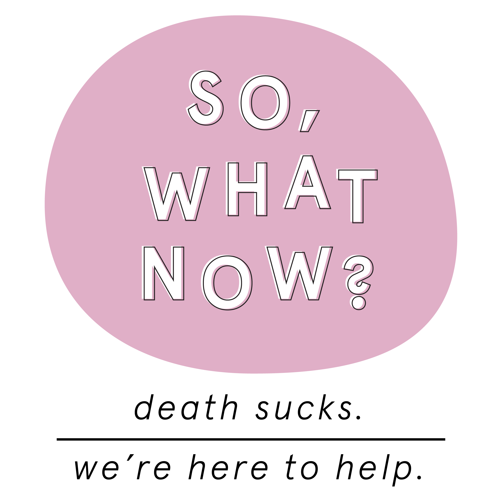
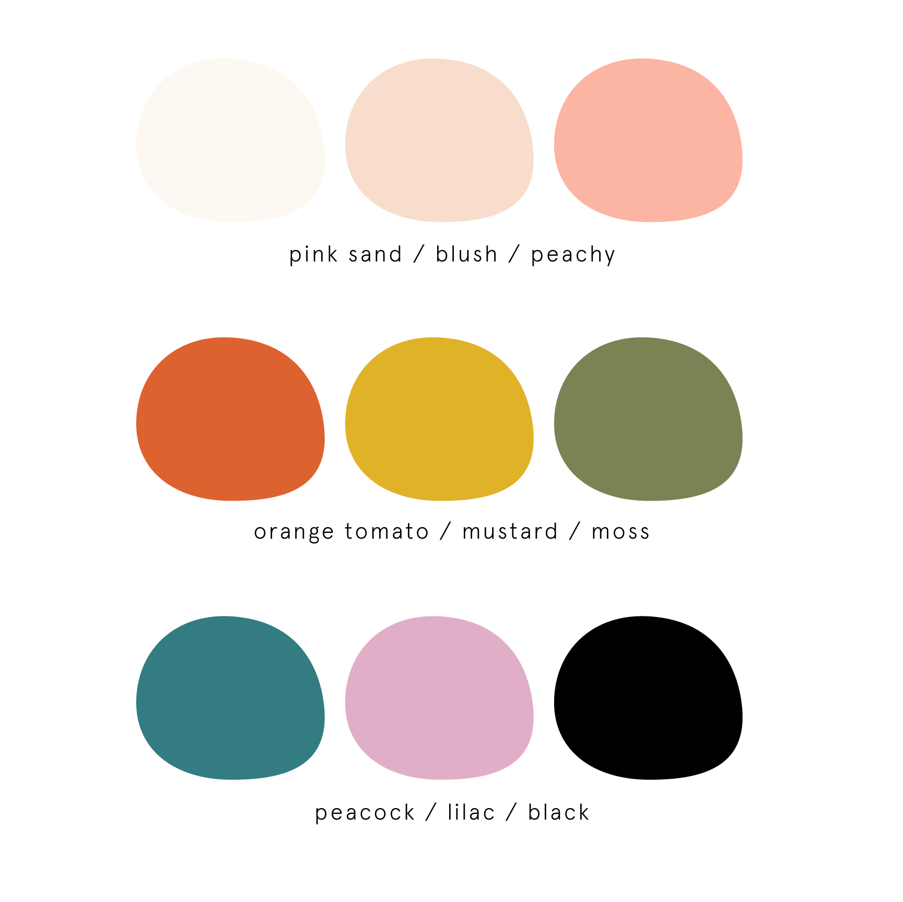
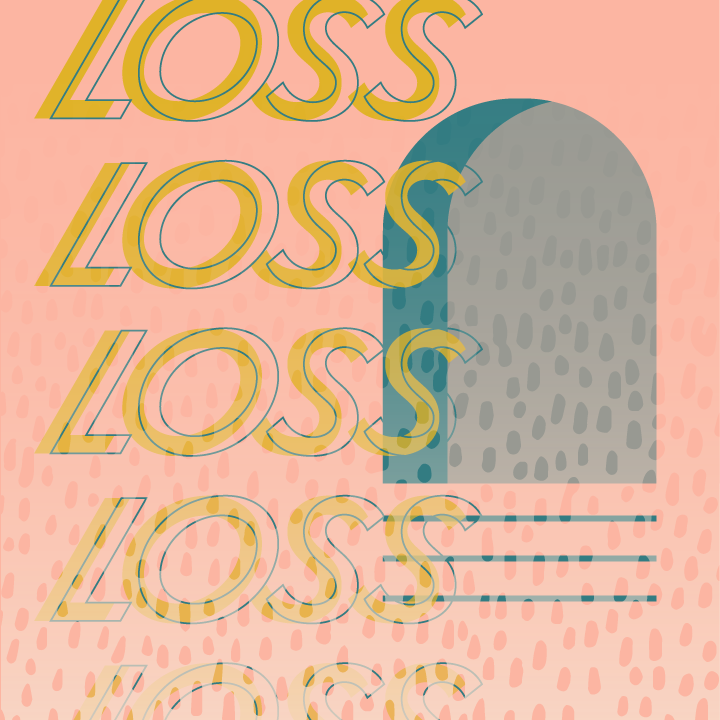

Grief, Loss and Death can be really hard and dark. I didn't want the look of the material I presented to feel that way. The images and graphics are based on a warm, inviting and slightly playful color palette. I incorporated big, bold repeating shapes that tied all of the imagery together.
Logo

Color Palette

User feedback pushed this project to another level. I approached other folks I knew had been through a major loss. Their suggestions created more resources for those who are dealing with the business of death and reinforced the community-building I hope to acheive with this project.

Seeing this project up until this point has been a massive labor of love. My big hope for this project is for it to live on and truly become a space where people can find community and resources. And that that space will grow and morph to better serve everyone who's searching for a little help while navigating loss and grief.
- Printed Workbooks
- Collaborating with other grief adjacent businesses: Funeral Homes, Therapists, Hospices, etc.
- Create printed collateral that would be available at other grief adjacent businesses
- Presenting more of other people's experiences with grief in the Your Stories section
- Book Club "meetings" on social media
- Phase out third party linked content and replace with my own custom, branded content
As I mentioned above, this project is very much a work in progress. The best way to stay up to date with the most recent news is to follow along on Instagram. Click on any image below to check out the latest!